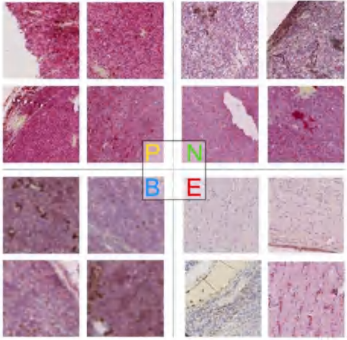

|
Muyi Sun (孙沐毅) Postdoctoral Researcher / Assistant Research Fellow Center for Research on Intelligent Perception and Computing, National Laboratory of Pattern Recognition, Institute of Automation, Chinese Academy of Sciences. (CRIPAC_NLPR_CASIA) No.95, Zhongguancun East Road, Haidian District, Beijing, China. [Email_1] muyi.sun@cripac.ia.ac.cn (As the Office Mailbox) [Email_2] sunmuyi@bupt.cn (As the Alumni Mailbox) |
  Dog.妞 and Dog.丑 Growing up with me and Lighting up My Life |
About Me
I am now a Postdoctoral Researcher with the Center for Research on Intelligent Perception and Computing (CRIPAC), National Laboratory of Pattern Recognition (NLPR), Institute of Automation, Chinese Academy of Sciences (CASIA), advised by Prof. Zhenan Sun.I received my Ph.D. Degree in Control Science and Engineering from the School of Automation (AI Nowadays), Beijing University of Posts and Telecommunications (BUPT) in 2020, under the supervision of Prof. Jun Yang, working with Dr. Hao Dang and Dr. Guanhong Zhang.
Before that, I received my BS. Degree in Automation from the School of Automation (AI Nowadays), Beijing University of Posts and Telecommunications (BUPT) in 2015. In recent years, I have published several papers as the first or corresponding author on reputable journal and conferences such as IEEE/ACM TMI, TIFS, TII, TCBB, JBHI and CVPR, BIBM.
Research Fields
My research interests include Medical Image Analysis and Biometric Image Generation. Recently, my main research topics include Efficient and Multi-Modality Medical Image Analysis (Transformer-based, MixUp-based, Knowledge Distillation, MultiModal Learning) and Controlable Person Image Generation (GAN-based, Diffusion-based, MultiModal Learning).Latest News
[12/2022] One paper on Pathological Nucleus Image Segmentation was accepted to ACM T-CBB.[12/2022] Our work Graph Flow on Lightweight Medical Image Segmentation was accepted to IEEE T-MI.
[09/2022] One paper on Dientangled Memory-based Face Inpainting was accepted to BMVA BMVC 2022.
[06/2022] I was awarded funding from China Postdoctoral Science Foundation.
[06/2022] Our work AnyFace in CVPR 2022 was selected as one of the Best Paper Finalists.
[03/2022] Two paper on Biometric Image Generation were accepted to IEEE/CVF CVPR 2022.
[03/2022] One paper on Bipasic Facial Age Translation was accepted to IEEE T-IFS.
Selected Publications and Pre-prints [Full list: Google Scholar]
| Biometric Image Generation | Medical Image Analysis |

|
A Unified Framework for Biphasic Facial Age Translation with Noisy Semantic Guided Generative Adversarial Networks.
Muyi Sun, Zhenan Sun#, et al. IEEE Transactions on Information Forensics and Security (CAS-Top, CCF-A, IF=7.231). [URL] [arXiv] [Code] |

|
Graph Flow: Cross-layer Graph Flow Distillation for Dual Efficient Medical Image Segmentation.
Wenxuan Zou, Muyi Sun#, Zhenan Sun, Caifeng Shan#, et al. IEEE Transactions on Medical Imaging (CAS-Top, CCF-B, IF=11.037). [URL] [arXiv] [Code] |

|
Self-supervised Correlation Mining Network for Person Image Generation.
Zijian Wang, Xingqun Qi, Kun Yuan, Wanting Zhou, Muyi Sun#. IEEE/CVF Conference on Computer Vision and Pattern Recognition (CVPR, 2022, CCF-A). [URL] [arXiv] |

|
An Automated Framework for Histopathological Nucleus Segmentation with Deep Attention Integrated Networks.
Muyi Sun, Zhaoyang Wang#, Zhenan Sun, et al. ACM Transactions on Computational Biology and Bioinformatics (Reputable, CCF-B, IF=3.710). [URL] [arXiv] |

|
ShowFace: Coordinated Face Inpainting with Memory-Disentangled Refinement Networks.
Zhuojie Wu, Muyi Sun#, Zhenan Sun, et al. BMVA The British Machine Vision Conference (BMVC, 2022, Reputable). [URL] [arXiv] |

|
Accurate Retinal Vessel Segmentation in Color Fundus images via Fully Attention-based Networks.
Kaiqi Li, Muyi Sun#, et al. IEEE Journal of Biomedical and Health Informatics (CAS-Top, Reputable, IF=7.021). [URL] |

|
Biphasic Face Photo-Sketch Synthesis via Semantic-Driven Generative Adversarial Networks with Graph Representation Learning.
Xingqun Qi, Muyi Sun, Caifeng Shan, et al. Under Review in IEEE T-NNLS. [URL] [arXiv] |
 |
Prediction of BAP1 expression in uveal melanoma using densely-connected deep classification networks.
Muyi Sun, Gustav Stalhammar#, et al. Cancers (CAS-Top, Reputable, IF=6.575). [URL] |

|
HumanDiffusion: a Coarse-to-Fine Alignment Diffusion Framework for Controllable Text-Driven PIG.
Kaiduo Zhang, Muyi Sun, Kunbo Zhang#, Zhenan Sun, Tieniu Tan, et al. Under Review in IEEE Conf. [arXiv] |

|
Exploring Generalizable Distillation for Efficient Medical Image Segmentation.
Xingqun Qi, Muyi Sun#, Caifeng Shan, Zhenan Sun, et al. Under Review in IEEE T-MI. [arXiv] |
Service as Reviewer
[Journal] IEEE Journal of Biomedical and Health Informatics.[Journal] IEEE Transactions on Geoscience and Remote Sensing.
[Journal] IEEE Signal Processing Letters.
[Journal] Elsevier Information Fusion.
[Journal] Elsevier Artificial Intelligence in Medicine.
[Journal] Elsevier Computers in Biology and Medicine.
[Journal] Nature Scientific Reports.
[Conference] IEEE/CVF Conference on Computer Vision and Pattern Recognition.
[Conference] IEEE International Conference on Acoustics, Speech and Signal Processing.
[Conference] IEEE/IAPR International Conference on Pattern Recognition.
Awards
[06/2022] IEEE/CVF CVPR Best Paper Finalists.[05/2020] Outstanding Graduate of BUPT.
[10/2019] NanDu ScholarShip and First class scholarship of BUPT.
[12/2017] IEEE ICAMechS Best Paper Award.
[10/2026] First class scholarship of BUPT.
Many thanks to Richard Zhang and Zengjie Song for sharing his website template!